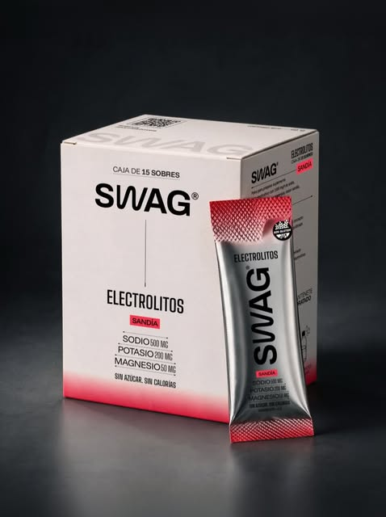

01 ELECCIÓN PERSONAL
REEL · A CÁMARA + DETALLES DEL PRODUCTO
Por qué elijo
estos electrolitos.
Compartir en qué me fijo cuando elijo un producto: revisar su composición, leer las etiquetas y entender qué estoy tomando.
“Me gusta revisar qué tiene lo que estoy tomando y elegir más conscientemente.”

Tomas sugeridas
- 01Hablar a cámara
- 02Mostrar el rótulo
- 03Preparar SWAG en un vaso
Leer guion tentativo
Desde que empecé a mirar las etiquetas de los electrolitos, me di cuenta de que no todos tienen lo mismo. Algo en lo que me fijo bastante es la formulación. Estos tienen 500 mg de sodio, 200 mg de potasio y 50 mg de magnesio. Además, no tienen azúcar ni calorías, que para mí es un punto a favor.
Hay opciones que tienen azúcares agregados u otros ingredientes que personalmente no siempre busco cuando quiero hidratarme. Por eso me gusta revisar qué tiene lo que estoy tomando y elegir más conscientemente.